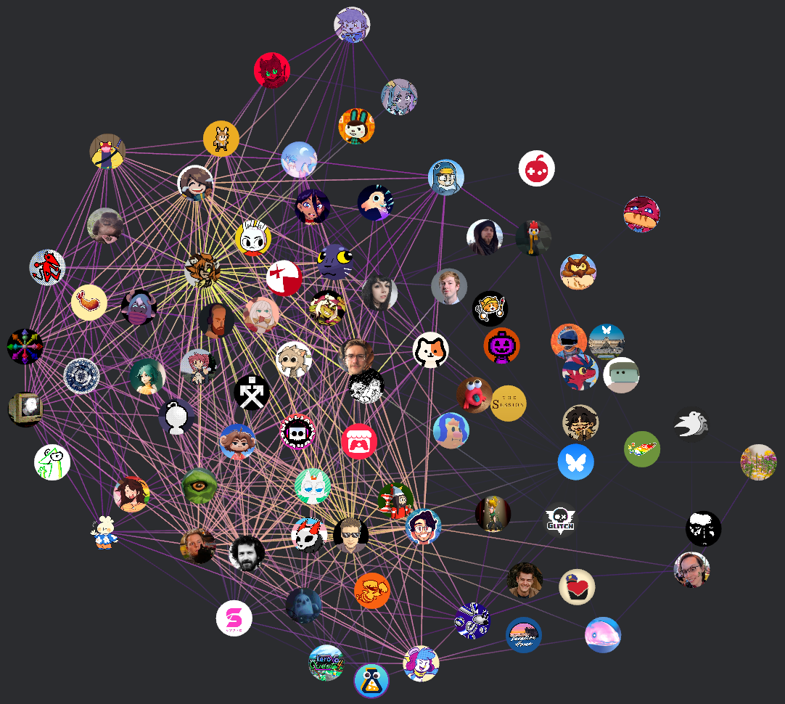

like most on neocities, i'm not big fan of most social media
if i'm using instagram it's to keep up with friends and nothing beyond that, despite how aggressive the site is at trying to suck you into reels (disabling suggested posts only works for 30 days before you have to do it again). i do use discord but nowadays i don't have a community which is very active which sucks. tumblr only gets cracked open when i'm obsessed with a fandom now which i guess was the original intent but i feel like the site is a lot less personal now than it used to be. i am pretty regular on youtube though because i have subscriptions and will occasionally delve through some algorithm stuff
and now there's bluesky! i really like bluesky because it seems more people interact with each other. replies always seem to lead to conversations and i like that - there's some people i find really cool that actually follow me back for my stuff too! i think the coolest thing though is the protocol it's build on
bluesky is built on the atmosphere protocol (atproto for short) which is an open standard for building decentralised social networks. essentially this means bluesky is simply a client for their own personal data servers (PDS) and anyone can make their own client for those servers or even their own platform if they set up their own servers. if they do users can migrate between platforms pretty easily thanks to unique identifiers.
this complete openness also has a wonderful side-effect - you can make your own algorithms! whether a standard discover feed, trusted news sources or specific cultures, games, groups etc. it's likely been made. feed generators work by curating posts coming from the firehose, a stream of all new posts
and this leads to my favourite part of atproto - the webtoys! i first heard about these thanks to simone's blog post where he talks about making a cool realtime firehose visualiser in the matrix style. there's a lot of cool realtime firehose visualisers such as windows xp screensaver, firesky, another matrix one but i really like the ones that do something more creative than just spamming the text like night sky, emoji rain, signup butterflies, colour analyser, emotion analyser, deletions, filter, swear sky, nice sky and bluesky dictionary
however there's not many which play around with profiles. i could only find skircle which i thought was meh so i went down the rabbit hole of making a visualiser for bluesky follow relationships... skyweb 
the process of coding it was pretty smooth except for the CORS issues grabbing the avatars - i ended up having to request the images straight from the PDS rather than simply from the bluesky cdn. i'd like to improve it by coding the layout engine rather than borrowing one since it doesn't integrate well with the rest of the codebase and i think it'd also be neat if i extended it to work for other sites like github or tumblr